#0198/100
#0198/100One Piece · Royal / formal
Boa Hancock
AniOracle editorial pick for silhouette, palette, and character-world coherence.
Royal silhouetteColor harmonyAccessory stylingWorld coherence
Twenty character looks ranked for silhouette, color harmony, accessories, and how naturally each outfit belongs to its anime world. These are fan-made editorial ratings, not official creator scores.
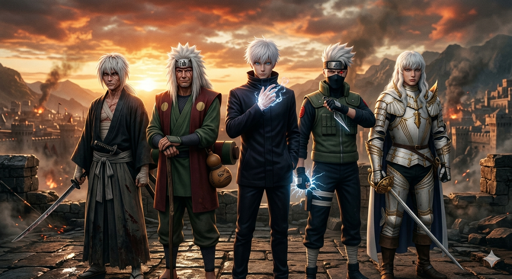
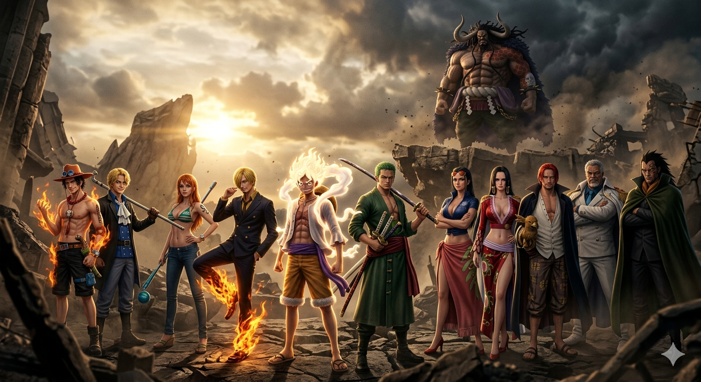
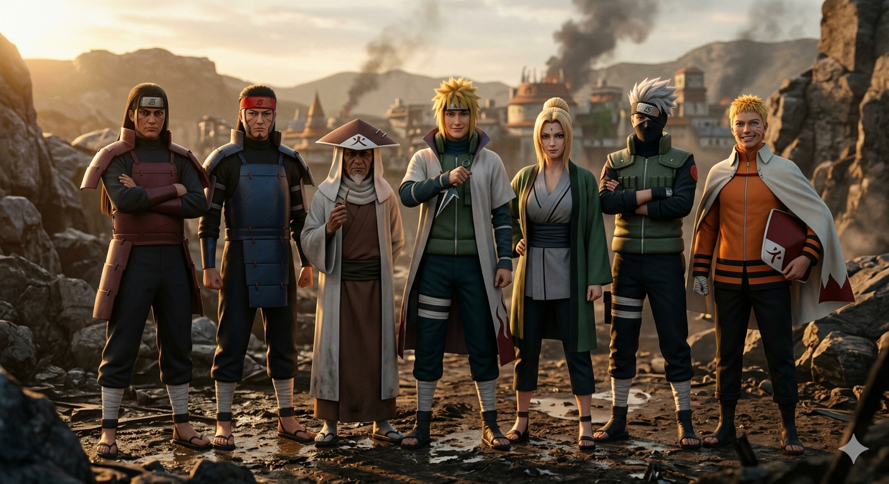
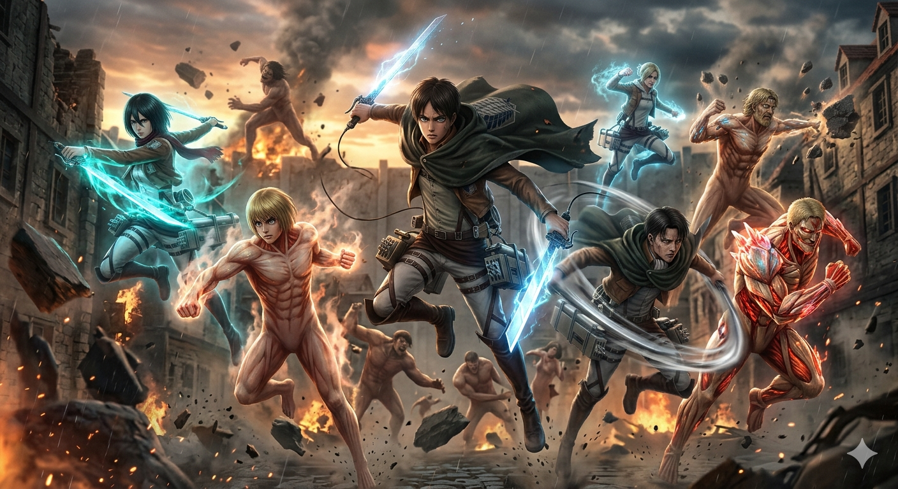
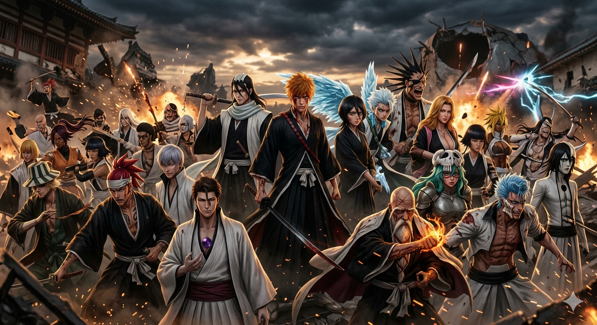
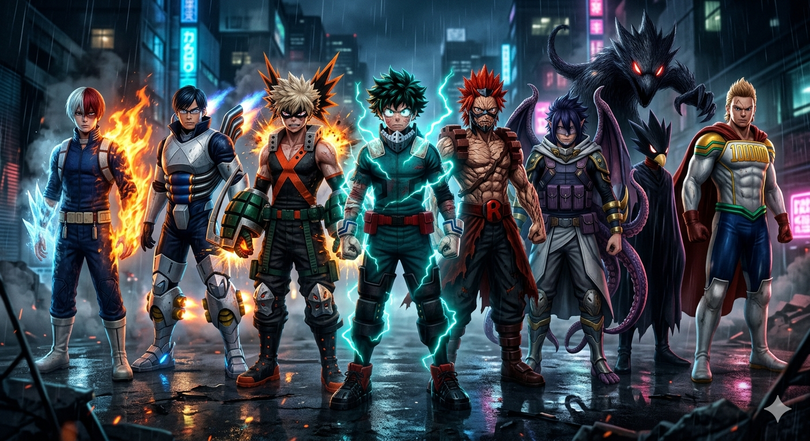
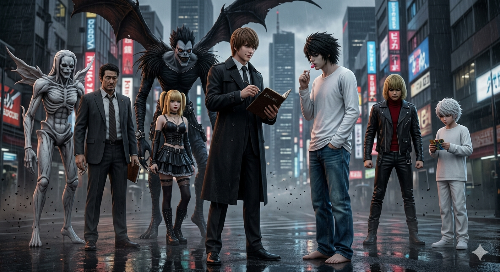
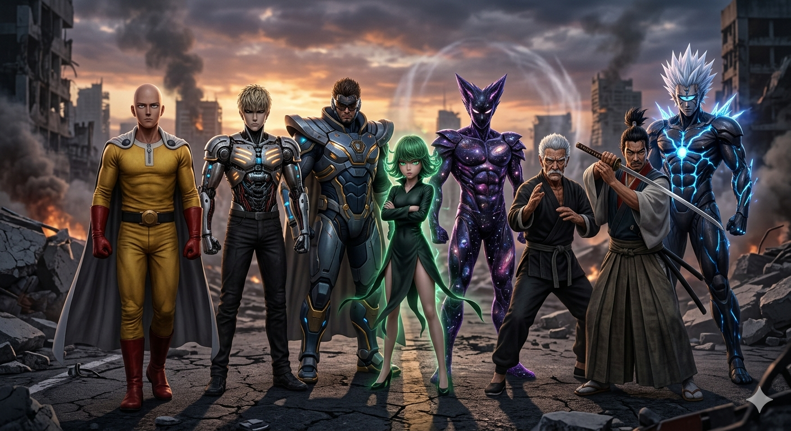
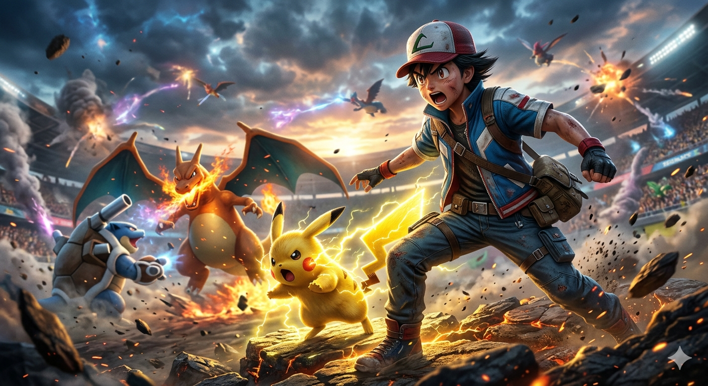
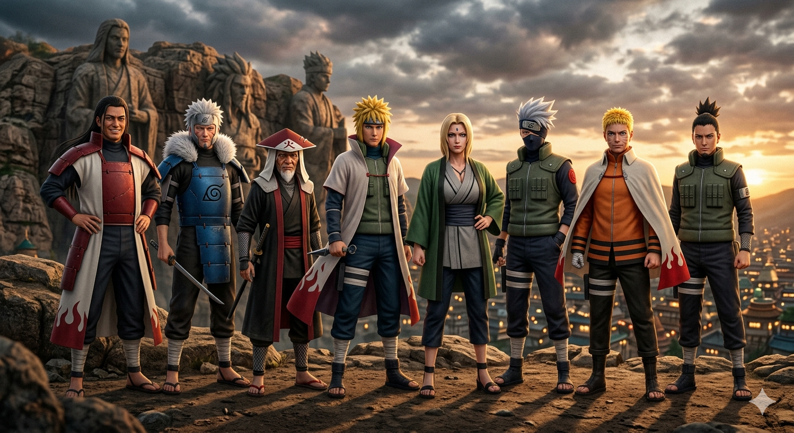
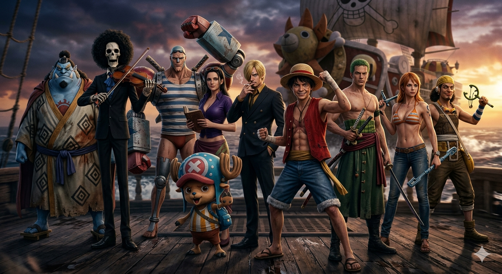
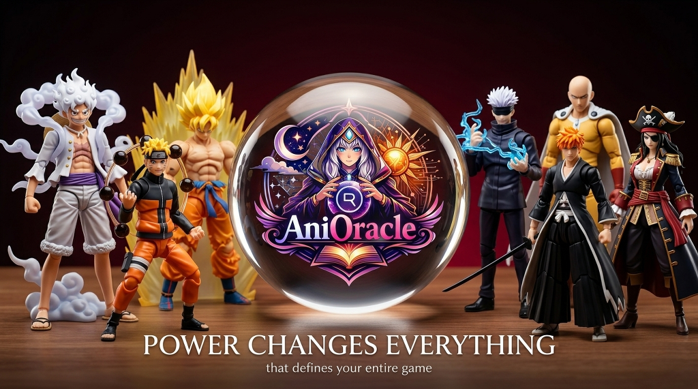
Use the category filters to explore battle couture, royal styling, gothic looks, streetwear, classic heroes, and more. Each entry includes four repeatable fashion skills so readers can compare design choices instead of reducing style to appearance alone.
#0198/100One Piece · Royal / formal
AniOracle editorial pick for silhouette, palette, and character-world coherence.
 #0297/100
#0297/100One Piece · Coastal / street
AniOracle editorial pick for silhouette, palette, and character-world coherence.
 #0396/100
#0396/100Fairy Tail · Battle couture
AniOracle editorial pick for silhouette, palette, and character-world coherence.
 #0495/100
#0495/100Attack on Titan · Battle-ready
AniOracle editorial pick for silhouette, palette, and character-world coherence.
 #0595/100
#0595/100Fate · Royal / formal
AniOracle editorial pick for silhouette, palette, and character-world coherence.
 #0694/100
#0694/100Violet Evergarden · Classic / formal
AniOracle editorial pick for silhouette, palette, and character-world coherence.
 #0794/100
#0794/100Demon Slayer · Nature / kimono
AniOracle editorial pick for silhouette, palette, and character-world coherence.
 #0893/100
#0893/100Spy x Family · Gothic / dark
AniOracle editorial pick for silhouette, palette, and character-world coherence.
 #0993/100
#0993/100One Piece · Classic / editorial
AniOracle editorial pick for silhouette, palette, and character-world coherence.
 #1092/100
#1092/100Naruto · Classic hero
AniOracle editorial pick for silhouette, palette, and character-world coherence.
#1192/100Chainsaw Man · Minimal / formal
AniOracle editorial pick for silhouette, palette, and character-world coherence.
 #1291/100
#1291/100Bleach · Classic / monochrome
AniOracle editorial pick for silhouette, palette, and character-world coherence.
 #1391/100
#1391/100Naruto · Modern hero
AniOracle editorial pick for silhouette, palette, and character-world coherence.
 #1490/100
#1490/100Attack on Titan · Battle-ready
AniOracle editorial pick for silhouette, palette, and character-world coherence.
 #1590/100
#1590/100Demon Slayer · Pastel / expressive
AniOracle editorial pick for silhouette, palette, and character-world coherence.
#1689/100Violet Evergarden · Classic / formal
AniOracle editorial pick for silhouette, palette, and character-world coherence.
 #1789/100
#1789/100Naruto · Modern / soft
AniOracle editorial pick for silhouette, palette, and character-world coherence.
 #1888/100
#1888/100Demon Slayer · Nature / kimono
AniOracle editorial pick for silhouette, palette, and character-world coherence.
 #1988/100
#1988/100Akame ga Kill! · Battle couture
AniOracle editorial pick for silhouette, palette, and character-world coherence.
 #2087/100
#2087/100Black Clover · Classic hero
AniOracle editorial pick for silhouette, palette, and character-world coherence.